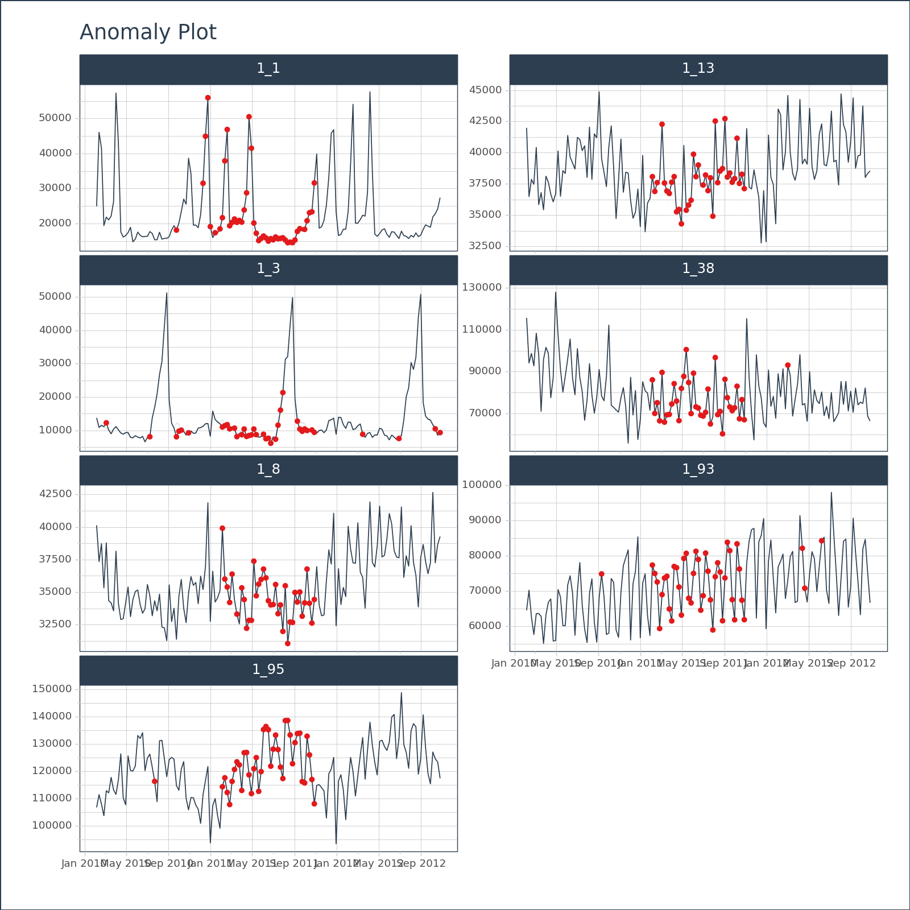

# EXAMPLE 1: SINGLE TIME SERIES
import pytimetk as tk
import pandas as pd
import numpy as np
# Create a date range
date_rng = pd.date_range(start='2021-01-01', end='2024-01-01', freq='MS')
# Generate some random data with a few outliers
np.random.seed(42)
data = np.random.randn(len(date_rng)) * 10 + 25
data[3] = 100 # outlier
# Create a DataFrame
df = pd.DataFrame(date_rng, columns=['date'])
df['value'] = data
# Anomalize the data
anomalize_df = tk.anomalize(
df, "date", "value",
method = "twitter",
iqr_alpha = 0.10,
clean_alpha = 0.75,
clean = "min_max",
)plot_anomalies
plot_anomalies(data, date_column, facet_ncol=1, facet_nrow=None, facet_scales='free_y', facet_dir='h', line_color='#2c3e50', line_size=None, line_type='solid', line_alpha=1.0, anom_color='#E31A1C', anom_alpha=1.0, anom_size=None, ribbon_fill='#646464', ribbon_alpha=0.2, y_intercept=None, y_intercept_color='#2c3e50', x_intercept=None, x_intercept_color='#2c3e50', legend_show=True, title='Anomaly Plot', x_lab='', y_lab='', color_lab='Legend', x_axis_date_labels='%b %Y', base_size=11, width=None, height=None, engine='plotly')
Creates plot of anomalies in time series data using Plotly, Matplotlib, or Plotnine. See the anomalize() function required to prepare the data for plotting.
Parameters
| Name | Type | Description | Default |
|---|---|---|---|
data |
Union[pd.DataFrame, pd.core.groupby.generic.DataFrameGroupBy] | The input data for the plot. It can be either a pandas DataFrame or a pandas DataFrameGroupBy object. | required |
date_column |
str | The date_column parameter is a string that specifies the name of the column in the dataframe that contains the dates for the plot. |
required |
facet_ncol |
int | The facet_ncol parameter determines the number of columns in the facet grid. It specifies how many subplots will be arranged horizontally in the plot. |
1 |
facet_nrow |
int | The facet_nrow parameter determines the number of rows in the facet grid. It specifies how many subplots will be arranged vertically in the grid. |
None |
facet_scales |
str | The facet_scales parameter determines the scaling of the y-axis in the facetted plots. It can take the following values: - “free_y”: The y-axis scale will be free for each facet, but the x-axis scale will be fixed for all facets. This is the default value. - “free_x”: The y-axis scale will be free for each facet, but the x-axis scale will be fixed for all facets. - “free”: The y-axis scale will be free for each facet (subplot). This is the default value. |
'free_y' |
facet_dir |
str | The facet_dir parameter determines the direction in which the facets (subplots) are arranged. It can take two possible values: - “h”: The facets will be arranged horizontally (in rows). This is the default value. - “v”: The facets will be arranged vertically (in columns). |
'h' |
line_color |
str | The line_color parameter is used to specify the color of the lines in the time series plot. It accepts a string value representing a color code or name. The default value is “#2c3e50”, which corresponds to a dark blue color. |
'#2c3e50' |
line_size |
float | The line_size parameter is used to specify the size of the lines in the time series plot. It determines the thickness of the lines. |
None |
line_type |
str | The line_type parameter is used to specify the type of line to be used in the time series plot. |
'solid' |
line_alpha |
float | The line_alpha parameter controls the transparency of the lines in the time series plot. It accepts a value between 0 and 1, where 0 means completely transparent (invisible) and 1 means completely opaque (solid). |
1.0 |
anom_color |
str | The anom_color parameter is used to specify the color of the anomalies in the plot. It accepts a string value representing a color code or name. The default value is #E31A1C, which corresponds to a shade of red. |
'#E31A1C' |
anom_alpha |
float | The anom_alpha parameter controls the transparency (alpha) of the anomaly points in the plot. It accepts a float value between 0 and 1, where 0 means completely transparent and 1 means completely opaque. |
1.0 |
anom_size |
Optional[float] | The anom_size parameter is used to specify the size of the markers used to represent anomalies in the plot. It is an optional parameter, and if not provided, a default value will be used. |
None |
ribbon_fill |
str | The ribbon_fill parameter is used to specify the fill color of the ribbon that represents the range of anomalies in the plot. It accepts a string value representing a color code or name. |
'#646464' |
ribbon_alpha |
float | The parameter ribbon_alpha controls the transparency of the ribbon fill in the plot. It accepts a float value between 0 and 1, where 0 means completely transparent and 1 means completely opaque. A higher value will make the ribbon fill more visible, while a lower value will make it |
0.2 |
y_intercept |
float | The y_intercept parameter is used to add a horizontal line to the plot at a specific y-value. It can be set to a numeric value to specify the y-value of the intercept. If set to None (default), no y-intercept line will be added to the plot |
None |
y_intercept_color |
str | The y_intercept_color parameter is used to specify the color of the y-intercept line in the plot. It accepts a string value representing a color code or name. The default value is “#2c3e50”, which corresponds to a dark blue color. You can change this value. |
'#2c3e50' |
x_intercept |
str | The x_intercept parameter is used to add a vertical line at a specific x-axis value on the plot. It is used to highlight a specific point or event in the time series data. - By default, it is set to None, which means no vertical line will be added. - You can use a date string to specify the x-axis value of the intercept. For example, “2020-01-01” would add a vertical line at the beginning of the year 2020. |
None |
x_intercept_color |
str | The x_intercept_color parameter is used to specify the color of the vertical line that represents the x-intercept in the plot. By default, it is set to “#2c3e50”, which is a dark blue color. You can change this value to any valid color code. |
'#2c3e50' |
legend_show |
bool | The legend_show parameter is a boolean indicating whether or not to show the legend in the plot. If set to True, the legend will be displayed. The default value is True. |
True |
title |
str | The title of the plot. | 'Anomaly Plot' |
x_lab |
str | The x_lab parameter is used to specify the label for the x-axis in the plot. It is a string that represents the label text. |
'' |
y_lab |
str | The y_lab parameter is used to specify the label for the y-axis in the plot. It is a string that represents the label for the y-axis. |
'' |
color_lab |
str | The color_lab parameter is used to specify the label for the legend or color scale in the plot. It is used to provide a description of the colors used in the plot, typically when a color column is specified. |
'Legend' |
x_axis_date_labels |
str | The x_axis_date_labels parameter is used to specify the format of the date labels on the x-axis of the plot. It accepts a string representing the format of the date labels. For example, “%b %Y” would display the month abbreviation and year (e.g., Jan 2020). |
'%b %Y' |
base_size |
float | The base_size parameter is used to set the base font size for the plot. It determines the size of the text elements such as axis labels, titles, and legends. |
11 |
width |
int | The width parameter is used to specify the width of the plot. It determines the horizontal size of the plot in pixels. |
None |
height |
int | The height parameter is used to specify the height of the plot in pixels. It determines the vertical size of the plot when it is rendered. |
None |
engine |
str | The engine parameter specifies the plotting library to use for creating the time series plot. It can take one of the following values: - “plotly” (interactive): Use the plotly library to create the plot. This is the default value. - “plotnine” (static): Use the plotnine library to create the plot. This is the default value. - “matplotlib” (static): Use the matplotlib library to create the plot. |
'plotly' |
Returns
| Type | Description |
|---|---|
A plot object, depending on the specified engine parameter: |
- If engine is set to ‘plotnine’ or ‘matplotlib’, the function returns a plot object that can be further customized or displayed. - If engine is set to ‘plotly’, the function returns a plotly figure object. |
See Also
anomalize(): The anomalize() function is used to prepare the data for plotting anomalies in a time series data.
Examples
# Visualize the anomaly bands, plotly engine
(
anomalize_df
.plot_anomalies(
date_column = "date",
engine = "plotly",
)
)# Visualize the anomaly bands, plotly engine
(
anomalize_df
.plot_anomalies(
date_column = "date",
engine = "plotnine",
)
)
<Figure Size: (700 x 500)># EXAMPLE 2: MULTIPLE TIME SERIES
import pytimetk as tk
import pandas as pd
df = tk.load_dataset("walmart_sales_weekly", parse_dates=["Date"])[["id", "Date", "Weekly_Sales"]]
anomalize_df = (
df
.groupby('id')
.anomalize(
"Date", "Weekly_Sales",
period = 52,
trend = 52,
threads = 1
)
)# Visualize the anomaly bands, plotly engine
(
anomalize_df
.groupby(["id"])
.plot_anomalies(
date_column = "Date",
facet_ncol = 2,
width = 800,
height = 800,
engine = "plotly",
)
)# Visualize the anomaly bands, matplotlib engine
(
anomalize_df
.groupby(["id"])
.plot_anomalies(
date_column = "Date",
facet_ncol = 2,
width = 800,
height = 800,
engine = "matplotlib",
)
)